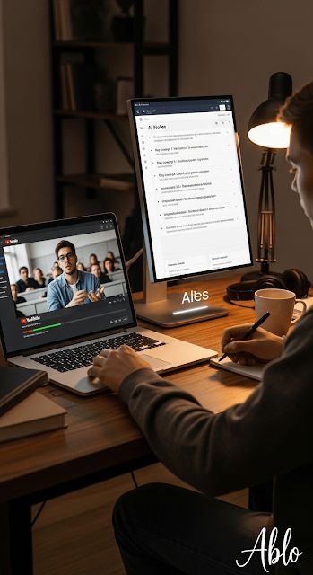
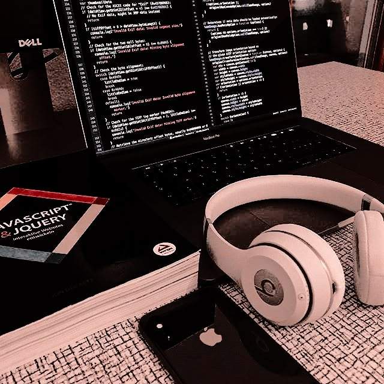

Mes Divertissements
Gaming & E-sports
Véritable passionné de jeux vidéo, j'apprécie particulièrement les jeux de stratégie et de réflexion qui permettent de développer une vision analytique tout en s'évadant.

Veille & Lecture Tech
Je consacre une grande partie de mon temps libre à lire des documentations, des blogs spécialisés et des articles sur les dernières avancées en cyber-sécurité et réseaux.

Musique & Concentration
La musique est mon alliée indispensable lors de mes sessions de programmation. J'écoute principalement de la Lo-fi ou de la Synthwave pour rester focus sur mes lignes de code.
Échecs & Logique
Pour stimuler ma réflexion logique, j'aime jouer aux échecs. C'est un excellent moyen de s'entraîner à anticiper les problèmes, une compétence utile en informatique.